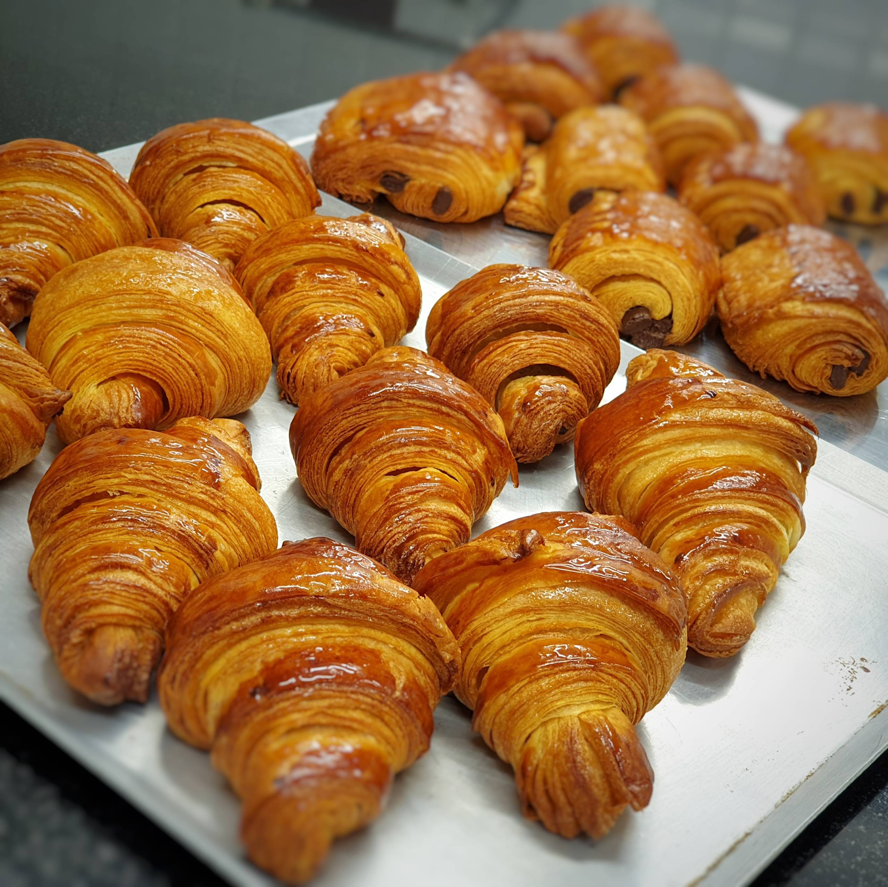

🥠A picture of a croissant
A croissant is a buttery, flaky, viennoiserie pastry of Austrian origin, named for its historical crescent shape. Croissants and other viennoiserie are made of a layered yeast-leavened dough
